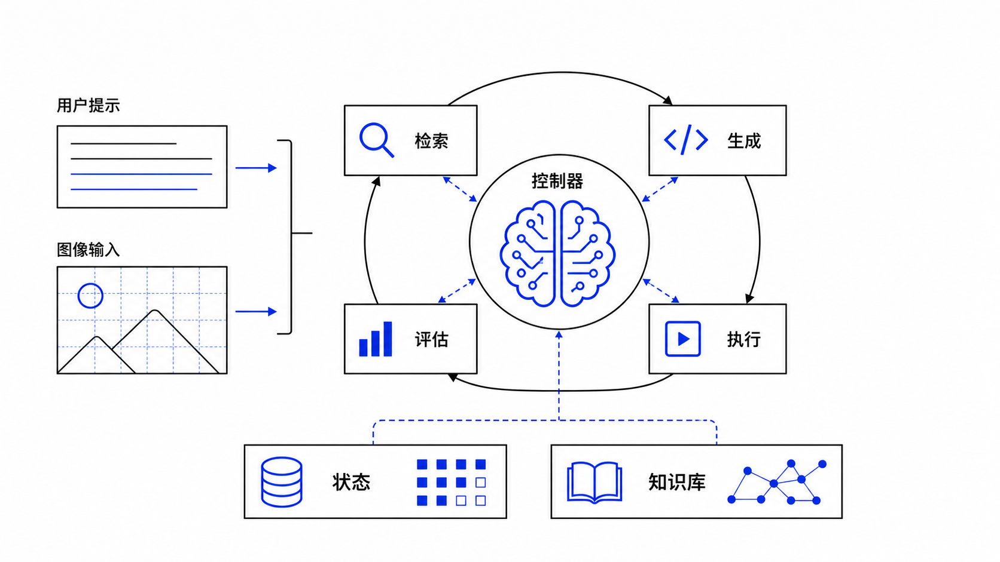
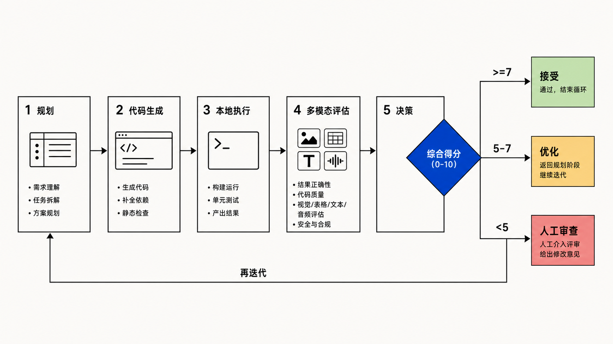
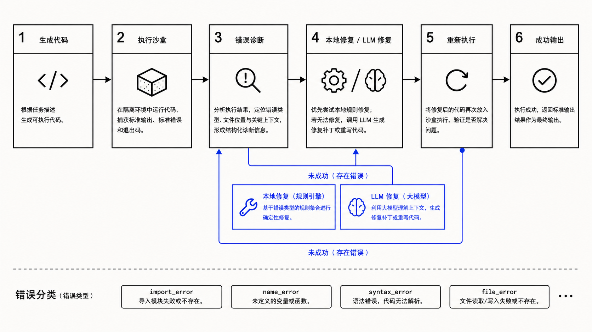

图像算法
自动化 Agent
用户输入提示词与图片，系统自动完成规划、检索、代码生成、本地执行、质量评估和多轮迭代。核心不是固定流程，而是由 ControllerAgent 驱动的可观测闭环。

从“图像处理功能”升级为“图像算法任务代理”
ControllerAgent 是决策大脑
它维护 session、解析任务、选择策略、调度 Agent、记录调用、处理迭代结果，并把状态事件推送给前端。
任务理解
TaskParser 将自然语言映射为 simple / medium / complex、约束和置信度。
策略规划
PlanningEngine 在 fast / standard / quality / conservative 中选择计划。
过程控制
评分、错误、最大迭代次数共同决定继续、停止或人工审查。
协作信号
CollaborationCoordinator 转发检索质量、错误反馈、前置评估。
状态管理
状态快照、日志和 Agent 调用记录落盘，支持恢复和审计。
学习复用
KnowledgeBase 推荐历史成功方案，提升类似任务启动质量。
四个 Agent 形成任务闭环，每个 Agent 有清晰责任边界
RetrievalAgent
- LLM 规划搜索词
- Tavily 多路检索
- 综合算法简报
- 质量自评 + TTL 缓存
CodeGenerationAgent
- OpenRouter 生成 Python 代码
- 注入本地库约束
- 接收迭代反馈
- 支持错误修复模式
ExecutionAgent
- 准备执行环境
- 执行 generated code
- 检查输出图片
- 诊断异常类型
EvaluationAgent
- 多模态图片评估
- 代码评估回退
- 提取 SCORE
- 输出可执行改进建议
同一个入口，根据任务复杂度动态选择不同 Agent 序列
检索不是固定模板拼接，而是“规划 → 搜索 → 综合 → 自评”
RetrievalAgent 先让 LLM 从算法原理、Python/OpenCV 实现、最佳实践三个角度规划搜索词；再用 Tavily 检索；最后让 LLM 综合成代码生成简报，并输出质量分与 should_skip。
评分不是展示项，而是下一步决策信号
EvaluationAgent 要求返回机器可解析的 `SCORE: X/10`。Controller 将 score 与 max_iterations 结合，决定接受、继续优化、停止或转人工审查。

执行失败不会直接退出，而是形成自动修复链路
ExecutionAgent 捕获 traceback，分类为 import_error、name_error、attribute_error、type_error、file_error、syntax_error 等，再由 CodeGenerationAgent 优先本地修复，必要时 LLM 修复并重新执行。

状态管理让过程可恢复；知识库让历史结果可复用
问题模式
通过关键词抽取与 Jaccard 相似度匹配历史问题。
成功方案
记录 approach、score、success_count、code_samples。
权重更新
成功提升复用权重，失败降低方案评分并可标记 inactive。
前端不是只等结果，而是实时呈现 Agent 思考与执行轨迹
消息层
ChatWindow + MessageItem 渲染用户输入、agent_update 和最终回复。
过程层
stateLogs 让检索、生成、执行、评估每一步都有可见证据。
会话层
Sidebar 管理历史会话，hydrateSessionFromBackend 支持重启恢复。
当前实现已经覆盖 agentic 系统的五个核心特征
可靠性
可观测性
可扩展性
算法能力
沉淀更多高质量模板、参数搜索策略和图像任务基准。
执行安全
增强代码沙箱、资源限制、文件访问约束和可解释错误报告。
产品体验
把每轮结果、评分、代码 diff 和用户反馈合并为可操作工作台。